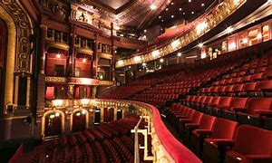
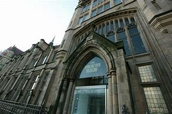
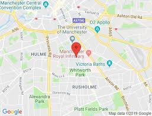
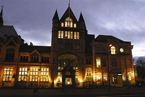

HOME THINGSTODO FOODANDDRINK SHOPPING WHERETOSAY
 .Type:Theatre Devas Street, Manchester, M15 6JA Manchesters performing arts venue on Manchester’s Oxford Road. Great fun - most impressive reflection of the community Contact is where young people change their lives through the arts, and audiences of all ages experience exciting new shows. We are the leading national theatre and arts venue to place young people at the decision-making heart of everything. At Contact, young people aged 13-30 genuinely lead, working alongside staff in deciding the artistic programme, making staff appointments and act as full Board members. The result is an outstanding, diverse and accessible artistic programme for everyone.
instagram:contactmcr twitter: Contact, Manchester youtube:Contact Theatre
Manchester Museum Museum Manchester Museum is a museum displaying works of archaeology, anthropology and natural history and is owned by the University of Manchester, in England. Sited on Oxford Road at the heart of the university's group of neo-Gothic buildings, it provides access to about 4.5 million items from every continent. It is the UK's largest university museum and serves both as a major visitor attraction and as a resource for academic research and teaching. It has around 430,000 visitors each year
instagram : mcrmuseum twitter :Manchester Museum youtube :Manchester Museum
